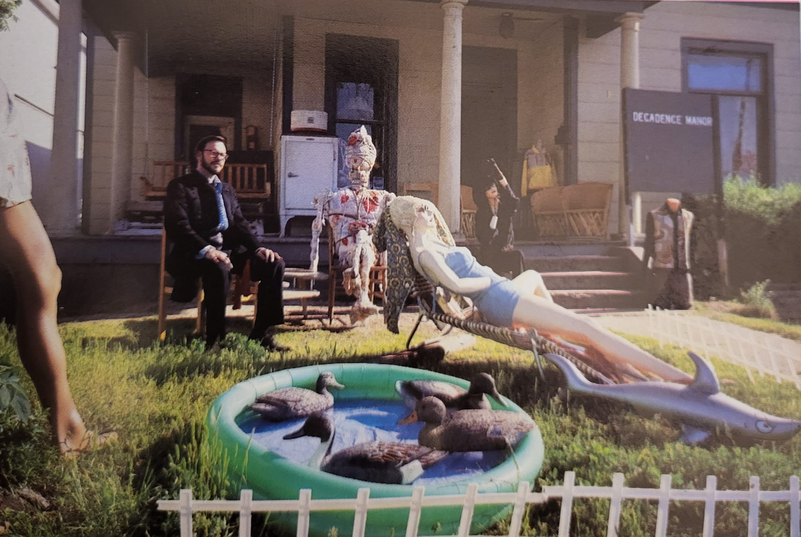
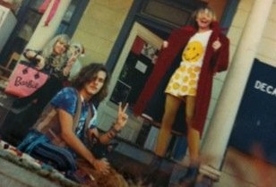
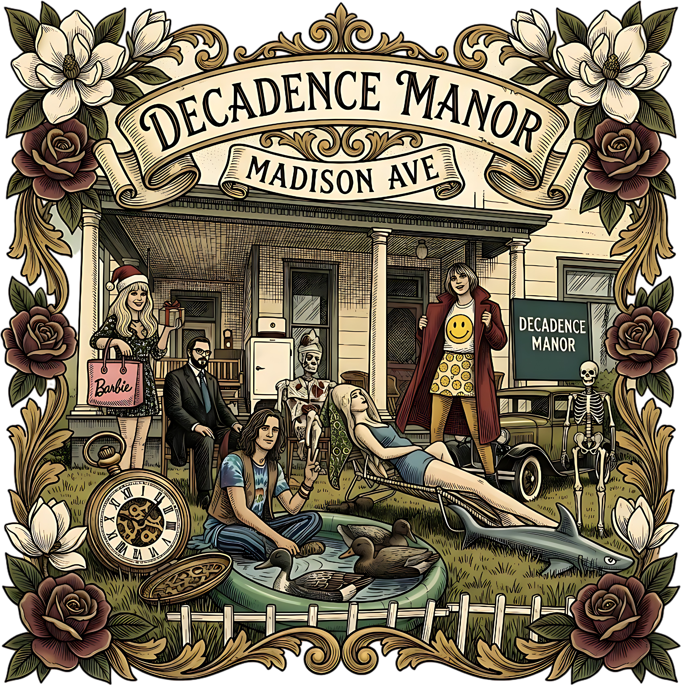

Decadence Manor:
Porch Lounging, Architectural Salvage, and Madison Ave After Dark
If you ever spent a summer night walking the sidewalk of Madison Avenue in the golden age of Midtown, you knew the porch before you even reached the gate. It was a sprawling wooden manor framed by blooming Southern magnolias, thorny heirloom roses, and an uncurated garden of architectural salvage.
We called it Decadence Manor. Spanning the 1980s when our family antique store anchored Madison and ending in the early 1990s, it sat right in the beating heart of the strip: exactly half a block east of The Antenna Club (1588 Madison) and half a block west of our antique shop at 1707 Madison Avenue. Living right inside the antique store, I knew all the shop owners, the business owners, and every single waitress at every restaurant and dive on the street back then.
Decadence Manor wasn’t a formal institution or an uptight historic landmark—it was a living, breathing sanctuary for Midtown artists, antique hounds, night owls, and lovable eccentrics who refused to live in beige suburbs.
The front yard was an open-air theater of Southern bohemian life. Weathered grandfather clock faces rested against picket fences. Cast-iron patio sets sat next to vintage motorcycles and classic cars parked haphazardly on the grass. You’d find characters lounging across velvet daybeds dragged onto the front porch, sipping iced tea or cold beer while someone played acoustic guitar and the cicadas roared in the canopy above.
That era taught me everything about the power of place. Memphis has always had a strange, poetic gravity where high art and back-alley grease sit together on the exact same porch. It taught me to look at discarded moldings, antique woodwork, and vintage signage not as trash, but as sacred cultural artifacts waiting to be given a second life.
Decadence Manor lives on in the memory of everyone who ever sat on that porch until three in the morning watching headlights sweep across Madison Avenue.
The Real Decadence Manor: Photographic Evidence
Every detail in the Decadence Manor artwork is grounded in real life. These original 35mm photographs captured the legendary front yard and porch theater on Madison Avenue that inspired the tribute:



The Master Artboard: From Memory to Myth
In this illustrated crest, both photographs are fused together into a single timeless Midtown Memphis narrative. Framed in hand-drawn Southern magnolia blossoms and deep burgundy roses, the house, the duck pool, the porch tribe, the pocket watch, and the classic hot rod become an indelible cultural artifact.
This design is an archival tribute to the house, the tribe, and the wild, creative spirit of lost Midtown Memphis.